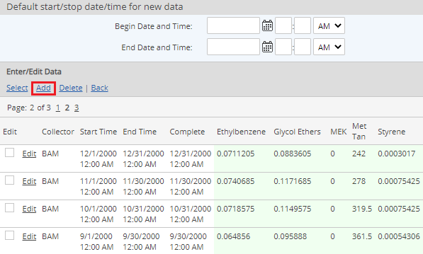
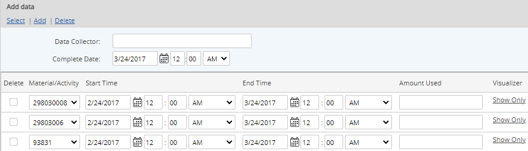

Right click and choose Data > Enter/Edit.

If the parent object contains both numeric parameters and Material Activity calculations, select Material Activity for the data type. This step is skipped if there are no parameters at the same location.
On the next page, select the Activity and the Materials to be used in the data entry.
Select HTML for the data entry format and click Next.

Existing MAC calculated data is displayed.

You can add a default start time for new data, if desired. If you do not enter a default date/time, the date/time of the last data entry will be used as the default start date/time for new data.
Select Add.
The data entry form appears. One row is available for each Material selected. You can add more rows, as needed, and select the Material for the data entry in any data row.
Complete the data entry by selecting the Material, entering the values for the specific use variable values (e.g., amount used), and entering the appropriate dates.
Complete Date is the date/time at which the data point will be stored. All data stored with the same Complete Date is saved as a single material batch. Aggregations are performed across all data rows.
Start Time and End Time is the date range for the material data line, or period of time for which the data is applicable (for instance, first and last day of month for monthly data, or start and stop time of equipment run). End Time must be >= Start Time.
Data Collector: Person or mechanism of data collection (optional text field).
You may add additional data rows for input by clicking Add. To delete a row, select the Delete checkbox and click Delete.
The Visualizer Show link (in the far right column) can be used to enter test values and view the potential calculated results, and to view the intermediate calculations used to produce the final calculated result. See Calculation Visualizer for MACs.

When you are done entering data, select Save.
A confirmation message appears informing you that the data entry was successfully added to the queue.
You can check the status of a command by clicking View Commands. Completed transactions have the status Succeeded. Transactions still in process may be Processing or Waiting. Failed commands should be reported to your administrator. Data from a failed transaction is not saved and will need to be resubmitted once the problem is resolved.